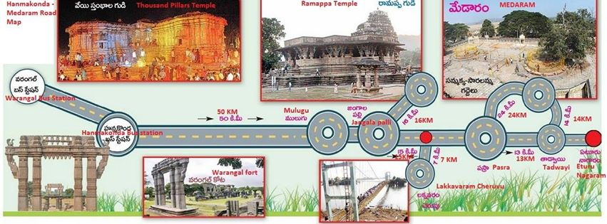

|
|
Warangal |  |

Ramappa gudi also known as the Ramalingeswara temple, is located 77 km from Warangal, the ancient capital of the Kakatiya dynasty, 157 km from Hyderabad in the state of Telangana in southern India. It lies in a valley at Palampet village of Venkatapur Mandal, in erstwhile Mulug Taluq of Warangal district, a tiny village long past its days of glory in the 13th and 14th centuries.[1] An inscription in the temple dates it to the year 1213 and said to have been built by a General Recherla Rudra, during the period of the Kakatiya ruler Ganapati Deva.
The sculpture of Ramappa Temple dates back to the Kakatiya times. Built in 1213 AD this temple is also known as
Ramalingeswara temple (near Warangal). Ramappa Temple was constructed by a General Recherla Rudra, under the reign of
King Ganapati Deva. The presiding deity here is Lord Ramalingeswara.
The architecture of Ramappa Temple is well planned and it follows the traditional temple building idiom. This is evident from
its star shape raised platform. The temple has a grabhagriha, mandapa, pillars and well carved stone sculptures. One notable
feature about of Ramappa Temple is that it is built with bricks. In fact these bricks are so light that they will even float on water.
A sculpted vimana accompany the garbhagriha or the inner chamber. The mandapa is situated in front of the mandapa or hall.
The mandapa comprises elegantly designed pillars that support the ceiling. The ceiling, in turn, has been adorned with well
carved figurines. The main motifs of the sculpture have their roots in Hindu mythologies, such as, Ramayana and Mahabharata.
Foliage sculptures and poised figures have been displayed on the chiselled pillars and ceilings. The outer walls of the temples,
too, are decorated with intricate designs.
The temple stands on a 6 feet high star-shaped platform. Starting at its base to its wall panels, pillars and ceiling are sculpted
figures drawn from Hindu mythology. The roof of the temple is built with bricks, which are so light that they are able to float on
water. The hall in front of the sanctum is filled with exquisitely carved pillars. The cornors of the roof at all 3 entrances have total of
12 sculptures of married women morvellously carved in different poses, which are the main attraction of the temple.
It is probably the only temple in India to be known by the name of the sculptor who built it. Poojas are still performed.
Besides the primary temple there are two sub shrines. Both the shrines are dedicated to Lord Shiva. Another conspicuous
feature of the sculpture of Ramappa Temple is the sculpted image of Nandi that faces the sanctum sanctorum (garbhagriha). With time, however, Ramappa Temple has suffered the loss of remarkable sculptures.
At a distance of 68 Kms from Warangal, Ramappa Temple is the finest and most
famous temple built by the Kakatiyas, situated in Palampet village. Dedicated to Lord Shiva, this beautiful monument was built in
1213 during the rule of King Ganapathi Deva by his Chief Commander Recherla Rudra.
6 AM to 6 PM
4 Hours/Half Day
68 Kms
Cab / Bus
1. Ramappa Lake (1 Km - details below) can be visited along with this place.
2. Ghanpuram Temples / Kota Gudulu (11 Kms - details below) can be visited along with this place.
3. Laknavaram Lake (29 Kms - details below) can be visited along with this place.